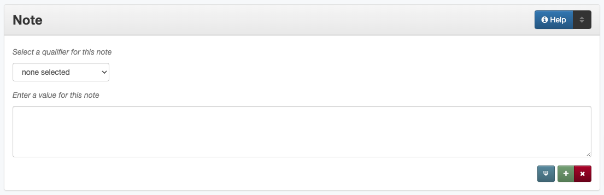

Note
Definition
A “catch-all” field for additional information that cannot be entered or does not fit well in other elements.
Where Can the Note Information be Found?
For any item type, information that goes into the note field can come from any part of the item including:
the cover
the title page
table of contents
handwritten notes on pages or images
examining or reading the text of the item (e.g., inconsistent page numbers)
supplementary or accompanying information
How Note Works in the Metadata Form
- Parts:
Note type – drop-down menu
Note – text field
Repeatable? : Yes - clicking ‘Add’ repeats all field parts
- Required?
No (more information)
How Should the Note be Filled in?
General (Display) Note
Guidelines |
Examples |
|---|---|
|
The original contains a silk fiber sample. |
|
“Issued May 11, 1918.”
Text at top of map: “A three-mile breakwater,
seventeen feet above mean low tide, sixteen
feet at the base and five feet at top.”
|
(Also see Serials and Series regarding normalized titles.) |
“Vol. IV.”
“Vol. II, No. 3.”
|
|
The original document is missing pages 15 and
16.
“Volume LXX” on title page is a misprint. It
should be “Volume LXXI.”
|
|
“S1-JR-41” written on sleeve.
Accompanying information: “Tractor given to
him by Mrs. Dick Mitchell.”
|
|
Additional historical context: The Tower of Americas was constructed for the World’s Fair of 1968, known as HemisFair ‘68, which was held from April to October, 1968. |
Additional information about the publisher: An important publisher of children’s books during the mid-1800’s in New England. Babcock was particularly known for “toy books” - short, small pamphlets and chapbooks with simple wood cut illustrations. |
|
This is one of a series of photographs taken during the One O’Clock Lab Band’s tour to Mexico, January 26 to February 21, 1967. The United States Department of State sponsored the tour, and the band traveled as representatives of the United States. Directed by Leon Breeden, the 20 member band and their guests, vocalist Carol Lurie and pianist-organist Linda De Leon, toured for 26 days, giving 19 scheduled concerts and two impromptu shows at venues throughout Mexico. |
Metadata (Non-Displaying) Note
Non-display notes are not visible to the public, but are used for any information important to internal maintenance of records or relevant to the original items
In the rare cases that a record has been public and is later hidden for any reason (e.g., due to privacy concerns, copyright issues, etc.), the administrator hiding the record should always include a note explaining why the record is being made non-public with any relevant information or documentation
Guidelines |
Examples |
|---|---|
This may be an appropriate place to include notes about:
|
Shortened title was chosen for official title to facilitate discovery. |
Conserved in 2002 with donation funds. |
|
Provenance: ca. Guerrero. |
|
Date of image based on movie release in 1953, per imdb. |
|
Per feedback from [name/e-mail address]: the person in this photo is Bob Johnson. |
|
Removed due to factual/production errors. |
Digital Preservation Note
Digital preservation notes are not explicitly included in the primary public display, but they are also not fully hidden from the public (like non-display notes) and may be included in certain kinds of metadata formats used for harvesting or sharing information
This field also contains a number of “legacy” values that documented digitization and metadata creator, software, and hardware information prior to 2009
Guidelines |
Examples |
|---|---|
This may be an appropriate place to include notes about:
|
This material was digitized by SceneSavers in
the Fall of 2023.
This material was digitized by DataBank.
Transferred via direct capture. Source was
recorded in 16:9 Aspect Ratio
|
This may not be an appropriate place to include:
|
Non-Displaying Note: This user:
[name/e-mail] provided additional context
about this image.
Display Note: Tape begins in black, then
cuts to program.
Display Note: Audio is garbled at the 3:05
mark.
|
Other Examples
Display Notes
Performed in Hebrew with English subtitles.
“Volume II.”
Pages numbered consecutively though each volume.
A related image is available in the Portal at 4.0084c.
Earlier images of this site are available in Mr. Goin’s collection at 4.0123a and 6.0018b.
Distributed to some depository libraries in microfiche.
At head of title: Committee print.
Does not show western Texas beyond 7 miles west of San Antonio.
Purchased with funds provided by the Friends of the UNT Libraries.
“HR-2555”
This letter is written on stationery that has a blue image near the top of the page of an airplane flying across a globe with the text “Air Mail,” as well as a red stripe pattern at the top and bottom of the page.
Non-Displaying Notes
There was accompanying information not included in the record because it did not appear to match the item.
Unverified creator due to conflicting information on duplicate copies.
This does not appear to actually be a photo of the Livingston-Hess House, though it is similar.
Hidden at the request of project owner because of privacy concerns with the model.
Digital Preservation Notes
Digitization completed by Digital Daring Inc. under contract to the University of North Texas Libraries.
2 channels of audio, dubbed from betamax. Picture is grainy and tracking issues from transfer are recorded in.
This material was digitized by Scene Savers in the Spring of 2022. Transferred via DVD rip.
Digitized from microfilm.
Resources
More Guidelines: